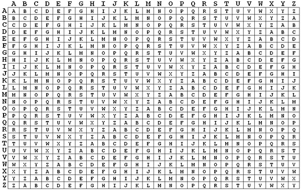

Vigenère Cipher Research
What is the Vigenère Cipher?
The Vigenère cipher uses multiple Caesar shifts arranged in the Vigenère table, which serves as the key for encrypting and decrypting messages.
It is a classic example of polyalphabetic substitution, increasing complexity by changing the shift based on the key word.
How does the Vigenère Cipher work?
Think of it as a shifting code that changes with every letter; unlike a simple code where "A" always becomes "D", the shift depends on the matching key letter, so the same plaintext letter can turn into different ciphertext letters.
To use it, you need three things: a message, a key word, and the Vigenère square.
- Message: what you want to hide.
- Key: a secret word (like "PIZZA") repeated to match the message length.
- Vigenère square: a grid that lets you intersect the message letter and the key letter.
Process: write the key repeatedly over the message; for each position, use the row for the key letter and the column for the message letter on the square to get the cipher letter.
Why I choose the Vigenère Cipher?
I had not heard of it before, so I decided to research it and found its shifting mechanism interesting.
Application Sample
Let's encrypt the word "HOLA" using the key "SOL".
- Align the text: message H O L A; key S O L S (repeat the key).
- Look up each pair on the square: H+S=Z, O+O=C, L+L=W, A+S=S.
- Result: ZCWS.
Advantages
- Polyalphabetic shifts reduce simple frequency analysis when the key is long enough.
- Easy to teach and reproduce with pencil-and-paper methods.
- Serves as a bridge to modern stream and block ciphers in historical courses.
Disadvantages / Vulnerabilities
- Repeated keys leak patterns, enabling Kasiski or index-of-coincidence attacks.
- Security depends heavily on key length and secrecy; short keys are weak.
- Modern computers can recover keys quickly if enough ciphertext is available.
References
- Wikipedia (ES) entry on the Vigenère cipher
- Source: Gemini